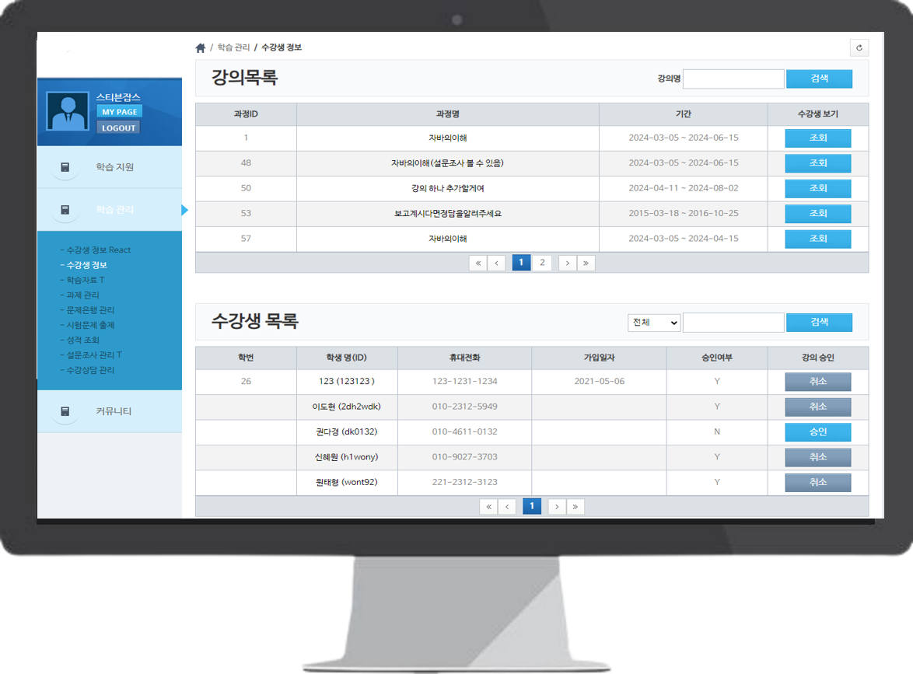
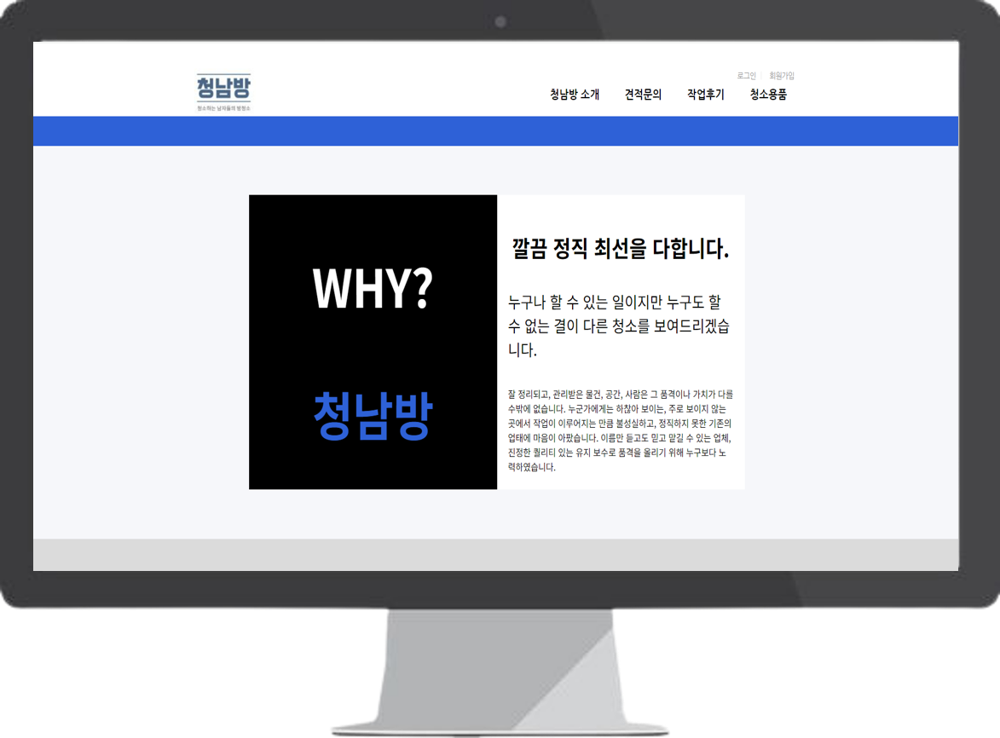
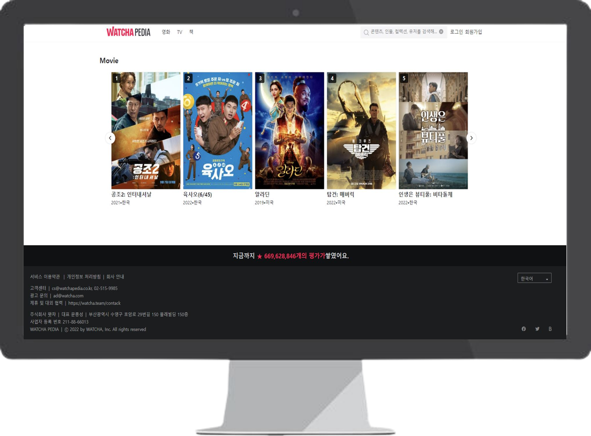

Frontend Developer Portfolio
사용자에게 자연스럽게 읽히는 화면을 설계하고 구현하는 Frontend Developer
React, Next.js, TypeScript를 활용하여 재사용 가능한 컴포넌트 구조를 설계하고, 상태 관리와 비동기 데이터 흐름을 고려한 안정적인 UI를 구현합니다. 기술 트렌드를 학습하며 더 나은 사용자 경험과 개발 생산성을 추구합니다.
- React & TypeScript
- Reusable Component Design
- Async Data Handling
- State Management (Zustand / React Query)

About
사용자 경험과 구조적 설계를 함께 고민하는
프론트엔드 개발자
저는 React와 Vue 기반의 실무 프로젝트를 경험하며, 화면을 구현하는 데서 그치지 않고 컴포넌트 구조, 상태 흐름, 유지보수성을 함께 고려하는 프론트엔드 개발을 지향해왔습니다.
이커머스, 운영 시스템, 업무용 웹 서비스 등 다양한 프로젝트에서 사용자에게 보이는 UI뿐 아니라 기능 단위의 분리, 재사용 가능한 구조, 데이터 흐름의 명확성을 고민하며 화면을 설계하고 구현해왔습니다.
새로운 환경에 빠르게 적응하며 요구사항을 구현해온 경험을 바탕으로, 앞으로도 더 안정적이고 확장 가능한 프론트엔드 구조를 만드는 개발자로 성장하고자 합니다.
Component Architecture
기능을 역할 단위로 분리하고 재사용 가능한 컴포넌트 구조를 설계합니다.
State & Data Flow
상태 관리와 비동기 데이터 흐름을 고려해 예측 가능한 UI를 구현합니다.
Practical Collaboration
다양한 프로젝트 환경에서 빠르게 적응하고 협업하며 기능을 완성해왔습니다.
Skills
실무 경험을 기반으로 정리한 프론트엔드 역량
기술 나열보다, 실제 프로젝트에서 다뤄온 구조와 역할 중심으로 정리했습니다.
Frontend Architecture
React와 TypeScript를 기반으로 컴포넌트 구조를 설계하고, 확장성과 유지보수를 고려한 UI 아키텍처를 구현합니다.
- React
- TypeScript
- Component Design
- Reusable Structure
State & Data Flow
상태 관리와 비동기 데이터 흐름을 구조적으로 설계하여 예측 가능한 UI와 안정적인 사용자 경험을 구현합니다.
- Zustand
- TanStack Query
- API Integration
- Async Handling
UI Development
사용자 흐름과 정보 구조를 고려하여 반응형 UI를 구현하고, 일관된 디자인 시스템을 유지합니다.
- Tailwind CSS
- Shadcn/ui
- Radix UI
- Responsive Layout
Backend Communication
REST API 기반으로 백엔드와 데이터를 연동하며, 요청/응답 구조를 이해하고 안정적인 데이터 흐름을 구성합니다.
- Axios
- REST API
- Spring Boot
- Node.js
Performance Optimization
불필요한 렌더링을 줄이고 데이터 흐름을 최적화하여 사용자 경험과 성능을 개선합니다.
- Rendering Optimization
- Memoization
- Lazy Loading
- WebView Debugging
Collaboration & Tools
협업 도구와 Git 기반 워크플로우를 활용하여 팀 프로젝트에서 안정적으로 개발을 진행합니다.
- Git / GitHub / GitLab
- Jira / Confluence
- ESLint / Prettier
- MSW
Selected Work
기능보다 화면 경험과 구성 방식이 드러나는 작업
대표 작업 위주로 정리해, 제가 어떤 UI를 만들고 어떤 화면 흐름을 설계했는지 보이도록 구성했습니다.
LMS Dashboard
학습 자료, 과제, 수강생 관리 화면을 맡아 사용자 권한에 따라 다른 흐름을 보여주는 관리형 UI를 구성했습니다.
- 강사, 학생, 관리자별로 다른 화면 흐름을 정리
- 리스트, 상세, 업로드 기능을 읽기 쉽게 배치
- 정보가 많은 화면에서도 구조가 무너지지 않도록 구성
- JSP
- HTML
- CSS
- JavaScript
- Spring

BlueShirt
서비스 신청과 후기 작성 흐름을 중심으로, 사용자가 단계별로 움직이기 쉬운 화면을 구성한 프로젝트입니다.
- 입력 폼과 후기 화면을 중심으로 사용자 동선을 설계
- 서비스 이해를 돕는 화면 구성을 반복적으로 개선
- 기능 구현과 함께 UI/UX의 중요성을 체감한 작업

WatchaPedia
콘텐츠 탐색과 로그인 흐름을 구현하며, 팀 내 역할 분담과 화면 연결 구조를 함께 다듬었던 프로젝트입니다.
- 콘텐츠 탐색, 로그인, 인터랙션 흐름 구현
- 팀장 역할을 맡아 작업 구조와 역할을 조율
- 기능 연결과 데이터 흐름을 화면에 자연스럽게 반영
